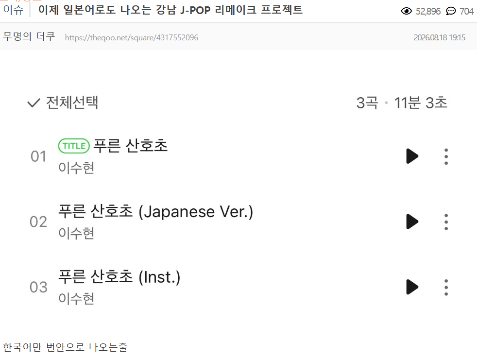
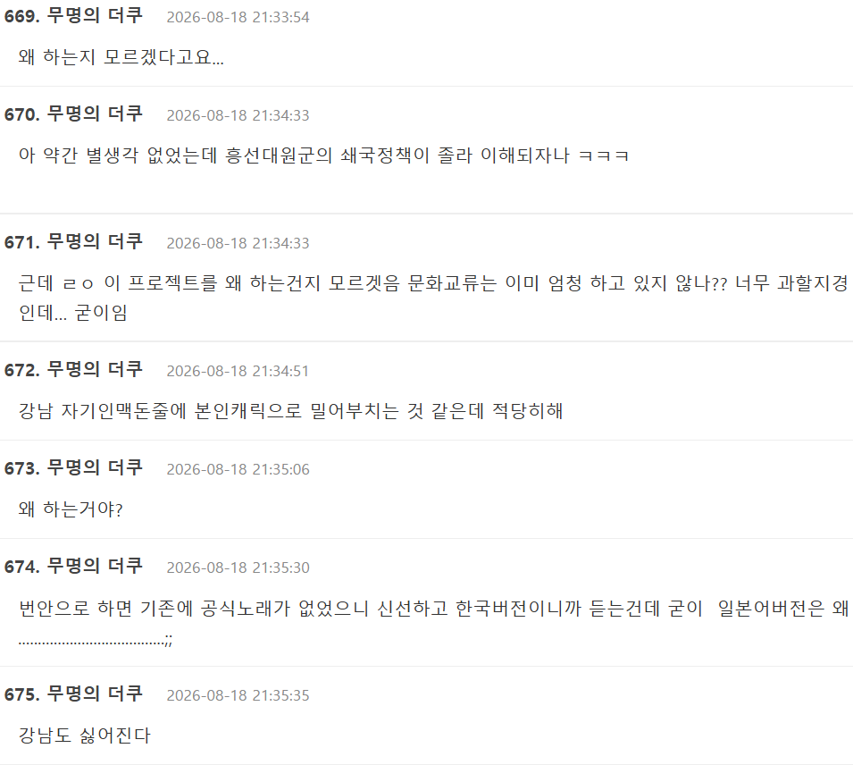
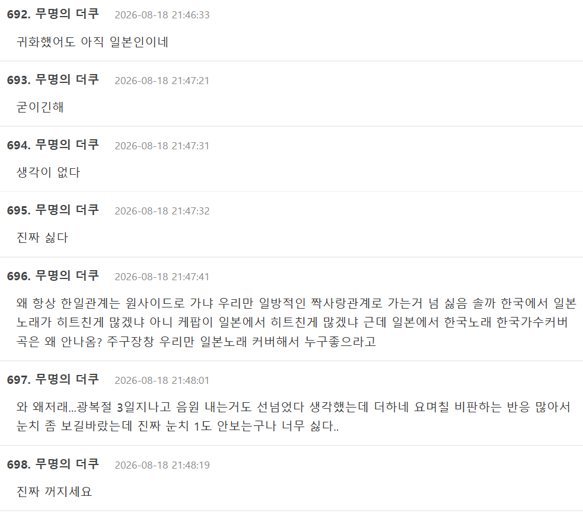
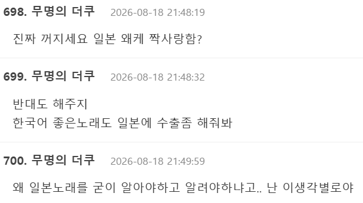

욕 하는 이유
1. 광복절 3일 밖에 안지났는데 일본 노래 리메이크 곡 냈다고
2. 한국어 버전 뿐만 아니라 일본어 버전도 냈다고
3. 아몰랑 그냥 일본 싫어




욕 하는 이유
1. 광복절 3일 밖에 안지났는데 일본 노래 리메이크 곡 냈다고
2. 한국어 버전 뿐만 아니라 일본어 버전도 냈다고
3. 아몰랑 그냥 일본 싫어
댓글
수집 당시 댓글 3개
뇌절금지 · 2 일 전
사이트 이름부터 더쿠 잖아 시발 ㅋㅋㅋㅋㅋ 멀쩡한 애들은 지쳐서 진작 사라지고 신규 가입도 못해서 성격 뒤틀린 사람들이랑 돈주고 계정 사오는 미친 사람들만 남은 사이트임 ㄹㅇ
비나비 · 2 일 전
걍 번안곡 호불호를 떠나서 별 이상한것까지 꼬투리 잡는 느낌이더라
캬루룽 · 2 일 전
?? 지금은 많이 변질 되긴 했지만 원래 더쿠 근본이 호타루의빛, 꽃보다남자, 고쿠센 같은 고대 시절부터 일드 덕질하고 jpop 오리콘차트 소식 공유하면서 일본 유학정보 공유하던곳 아니였나? 내가 노다메칸타빌레 자막 찾으러 처음 찾아갔던 기억인데..